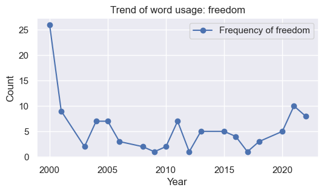

This bar chart shows the total number of songs from various countries between 2000 and 2023. The United States leads significantly with the highest number of songs, followed by the United Kingdom and Canada. The chart highlights the dominance of certain countries, especially English-speaking countries in the music industry over the given period.
Visualisation
This line chart displays national trends in the Billboard Hot 100 from 2000 to 2023, tracking the number of songs from the top 10 countries each year. United States (purple line): Dominates the chart with the highest number of songs, though there's a noticeable decline after 2015. United Kingdom (red line) and Canada (green line): Show consistent, though significantly lower, representation compared to the United States. Other Countries: Barbados, Australia, Jamaica, France, Spain, Trinidad and Tobago, and Scotland have much smaller, yet noticeable, presences with some fluctuations over the years. It can be said that with time there has been more and more participation of people in the music industry from different countries.
This line chart shows regional trends in the Billboard Hot 100 Chart from 2000 to 2023. North America (purple) consistently leads with the most songs, followed by Europe (green) with a noticeable presence. Asia (red), Oceania (orange), Africa (blue-purple), and South America (blue) have minimal representation, highlighting the dominance of North American and European artists in the music industry.
We can also see a slight increase in the number of South American artists (blue), African artists (blue-purple), and Asian artists (red) after 2020. It is a great breakthrough for Asian music after years of silence to gain more appearances on Billboard thanks to the global popularity of K-pop music.
This pie chart shows the gender representation of artists in the Billboard Hot 100 from 2000 to 2023. Male artists dominate with 64%, while female artists make up 34.4%. Genderfluid (0.85%), non-binary (0.637%), and trans women (0.0531%) have much smaller representations, highlighting a significant gender imbalance in the music industry over this period. But it also shows that the different genders are starting to get recognized in the music industry.
This bar chart shows the annual gender distribution of artists in the Billboard Hot 100 from 2000 to 2023. Male artists (green) consistently dominate each year. Female artists (purple-blue) form the next largest group, while genderfluid (red), non-binary (purple), and trans women (orange) artists have smaller but gradually increasing representation, indicating a trend towards greater gender diversity in the music industry over time.
It is also worth mentioning that the missing gender data is attributed to the missing gender property of music bands, which is visually presented in the bar chart as blank spaces. There is an obvious trend over the years that the blank spaces are getting smaller, which could be proof that the popular artists on the Billboard chart are more and more individual, and the bands on the chart are getting less.
This heatmap displays the yearly sentiment scores of song lyrics from 2000 to 2023. Each cell represents the average sentiment score for that year, with colors indicating the sentiment intensity. We can retrieve the information of sentiments according to the changing color scale, in which the red shades represent higher sentiment scores (more positive sentiment), while blue shades represent lower sentiment scores (more negative sentiment).
Years like 2010 (0.13), 2012 (0.12), and 2002 (0.11) have higher sentiment scores, indicating more positive lyrics.
Years like 2017 (0.03), 2018 (0.05), and 2019 (0.04) show lower sentiment scores, indicating more negative lyrics. It seems like 2017 is the saddest year of all time, in terms of the words used in lyrics.
The heatmap also illustrates the fluctuating emotional landscape of song lyrics over the years, with a notable dip in sentiment during the pandemic year of 2020. This low sentiment score aligns with the global emotional impact of COVID-19. The subsequent rebound in 2021 and 2022 suggests a period of emotional recovery, although the dip in 2023 highlights ongoing challenges people might be facing.

These line charts collectively show the yearly trends in the frequency of various words that interest us in song lyrics from 2000 to 2023, For example:
Love: High usage early in the 2000s, peaking around 2010, followed by a decline and fluctuations in recent years.
Freedom:Peak usage in 2000, with a significant drop afterward, maintaining low but slightly rising frequencies towards the 2020s.
World: Notable peaks around 2005 and 2010, with considerable drops around 2015 and varied usage thereafter.
Happy:Peaks around 2005 and 2015, with lower frequencies in between and a slight increase around 2020.
Boy:Significant peaks around 2005 and 2010, with lower usage in other years and minor fluctuations.
Girl:High usage in the early 2000s, peaking around 2005, then a gradual decline and lower frequencies in recent years.
Bitch:Increasing trend over the years, with peaks around 2015 and 2020.
Money:Peaks around 2005 and 2015, with varied usage and lower frequencies in other years.
Baby:High usage in the early 2000s, declining steadily over the years.
Fuck:Increasing trend, peaking around 2015, with fluctuations and a slight rise towards 2020.
Cry:Peaks around 2005 and 2010, with lower frequencies in other years and minor fluctuations.
Smile:High usage around 2005, with peaks around 2010 and 2020, and varied usage in between.
We believe these keywords and their trending can reflect the emotions of the music creators, and also the grand narration of “love”, “freedom” and “world”.

This series of word clouds represents the most frequently used words in song lyrics for each year from 2000 to 2023. Each word cloud highlights the prominent words for that specific year, with larger words indicating a higher frequency of usage.
We can see several common repeated words like "love," "like," "know," "baby," "go," and "got" appear prominently across multiple years, indicating their consistent use in song lyrics over the years.
This visualization provides an overview of the dominant words, especially focusing on nuons in popular song lyrics from 2000 to 2023. It highlights both consistent themes, like love and relationships, as well as evolving trends in language and themes in music.